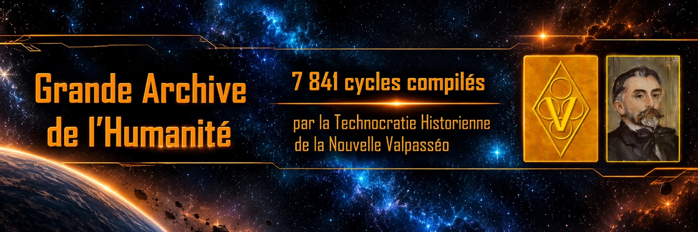

À propos

Ce site a été créé dans le but de préserver 21 ans d'histoire du jeu Apocalypsis et de la formidable créativité de sa communauté.
En dehors des nouvelles fonctionnalités, les archives sont présentées sous leur apparence d'origine et ce même pour le premier affichage de la Béta.
Le Discord d'Apocalypsis : https://discord.gg/y3U6wPZSpk
Contact sur le Discord : Paullus Beneradane – Iranis